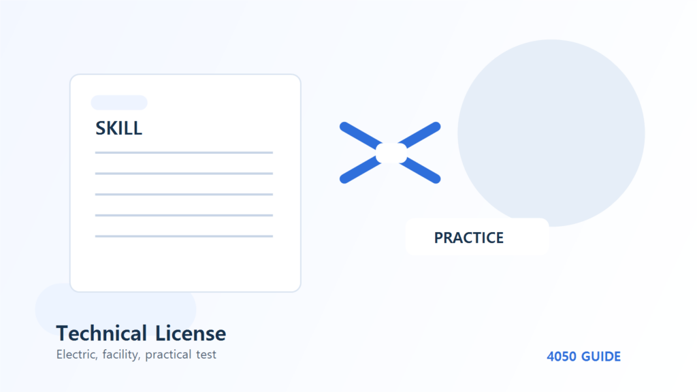

소방안전관리자 2급 과목별 공부와 모의 점검
2급 시험은 평균점수와 과목별 최저점수를 동시에 관리해야 합니다. 잘하는 과목만 반복하기보다 어느 과목의 어떤 이유를 보완할지 정하고, 법령 용어와 실제 관리 행동을 연결해 복습하세요.
두 과목 점수로 다음 복습을 정합니다
한국소방안전원의 2급 시험 안내 PDF는 과목별 25문항·총 50문항·60분, 문항당 4점을 설명합니다. 매 과목 40점 이상이면서 평균 70점 이상이어야 합니다. 아래는 그 배점을 이용한 학습용 계산이며 공식 기출이나 실제 성적이 아닙니다.
| 가상 정답 수 | 점수·평균 | 복습 판단 |
|---|---|---|
| 1과목 22개 · 2과목 12개 | 88점·48점 / 평균68점 | 과락은 아니지만 평균 미달. 약한 2과목 오답 분류 |
| 1과목 25개 · 2과목 9개 | 100점·36점 / 평균68점 | 2과목 최저점수와 평균 모두 미달 |
| 1과목 20개 · 2과목 16개 | 80점·64점 / 평균72점 | 계산상 두 조건 충족. 근거 없이 맞힌 문제는 별도 점검 |
첫 사례에서 1과목 정답을 하나 더 맞히면 평균은 70점이 됩니다. 그러나 다음 시험에서도 같은 결과를 낼 보장은 없고, 약한 2과목을 그대로 두면 작은 변동에 취약합니다. 최소점만 넘기는 전략보다 틀린 원인을 줄이는 계획으로 활용하세요.
법령 용어를 설명하는 칸과 관리 행동을 나누세요
공식 과목에는 제도·법령·시설 구조와 점검·계획·대응·교육·기록 관련 항목이 들어 있습니다. 단어 뜻을 읽는 일과 실제로 무엇을 확인·기록하는지 설명하는 일은 다릅니다. 교재의 해당 용어를 자기 말 한 문장으로 적고 그 설명의 근거 쪽을 함께 남깁니다.
가상의 학습 메모로 ‘업무수행기록’이라는 말을 외웠지만 누가 어떤 상황을 남기는지 설명하지 못했다면 용어 이해를 미완료로 둡니다. 본문에서 임의의 법정 기록 주기나 서식을 만들어 외우지 말고 현재 교재와 공식 안내의 해당 부분을 다시 읽으세요.
공부시간을 늘리기 전에 오답 종류를 셉니다
가상 연습에서 2과목 오답 13개 중 6개는 용어 혼동, 4개는 절차 순서, 3개는 질문 누락이었다고 가정합니다. 다음 60분을 용어 25분·절차 20분·질문 읽기 15분으로 배분해볼 수 있습니다. 이는 편집자의 운영 예시이며 학습효과가 검증된 공통 시간 비율이 아닙니다.
용어는 비교 설명, 순서는 교재 근거를 따라 단계 연결, 질문 누락은 요구 시점 표시로 다시 연습합니다. 같은 문제 정답을 기억한 것만으로 완료하지 않고 해설 없이 다른 보기가 적절하지 않은 이유를 말해보세요. 특정 유형이 줄지 않으면 강습·교재의 해당 부분에 질문을 모아 설명받습니다.
시험 직전에는 범위를 더 넓히지 말고 미완료를 확인합니다
현재 급수 교재와 개정 공지, 시험 접수·장소·입실 안내를 대조합니다. 다른 급수의 요약본과 오래된 법령을 섞지 않습니다. 시간 제한 연습 후 과목별 정답 수뿐 아니라 근거 없이 고른 수와 읽지 못한 수를 별도로 적으면 남은 준비를 좁힐 수 있습니다.
강습 수료와 시험 접수는 별도입니다. 아래 기록표는 학습용이므로 실제 건물의 소방계획·점검기록 양식으로 사용하지 마세요. 시험 지식과 실제 선임 업무·교육 의무 역시 별도로 확인해야 합니다.
소방 2급 과목별 복습표
정답 수가 아니라 틀린 원인과 다음 확인을 이어 쓰는 개인 학습표입니다. 법정 점검기록이 아닙니다.
| 과목·연습일 | 정답 수·점수 | 주요 오류·근거 쪽 | 다음 복습·재확인 |
|---|---|---|---|
| 가상 예 / 2과목 | 12/25 · 48점 | 용어 6 · 순서 4 · 질문 누락 3 | 용어 비교 설명 후 해설 없이 재확인 |
| 본인 1과목 | |||
| 본인 2과목 |
4050가이드가 만든 개인 정리용 양식입니다. 공식 신청서·평가표가 아니며 작성 파일을 이 사이트에 제출하지 않습니다. 예시 행을 지운 뒤 본인 기록으로 바꾸세요.
자주 묻는 질문
평균만 70점이면 되나요?
매 과목 40점 이상 조건도 동시에 충족해야 합니다. 공식 2급 기준을 확인하세요.
잘하는 과목을 더 공부하면 평균을 빨리 올릴 수 있지 않나요?
가상 점수 계산은 가능하지만 실제 결과를 보장하지 않습니다. 취약 과목의 원인을 줄여 점수 변동에도 대비하는 것이 이 글의 제안입니다.
이 내용을 1급에도 적용하나요?
학습 기록 방식은 참고할 수 있지만 시험 과목·방법·기준은 해당 급수 공식 안내를 따로 확인해야 합니다.
공식 자료와 확인일
2026년 10월 30일 확인한 자료와 편집자의 준비 제안을 구분해 정리했습니다. 개인별 계약·지원 자격·처리 결과는 해당 기관에서 확인하세요.